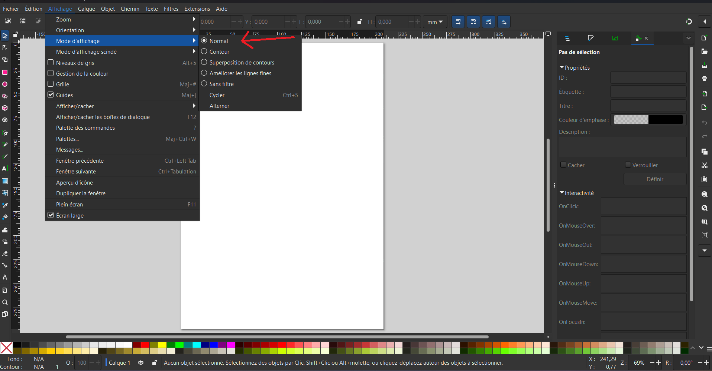

1. Paramètres essentiels
- Unité par défaut : millimètres
- Afficher la grille
- Activer l'enregistrement automatique
2. Modes d'affichage
Sur inkscape, vous avez plusieurs mode d'affichage, pour faire votre dessin nous vous conseillons de vous mettre en mode normal
3. Couleurs pour la découpe laser
- ▮ Découpe : Rouge (#FF0000)
- ▮ Gravure : Bleu (#0000FF)
- ▮ Balayage : Noir (#000000)
4. Raccourcis utiles
- Ctrl + G : Grouper
- Ctrl + Shift + G : Dégrouper
- Ctrl + D : Dupliquer
- Ctrl + Z : Annuler
5. Remise à zéro des outils Inkscape
- Outil Sélection : Réinitialiser dans la barre de contrôle.
- Outil Texte : Réinitialiser la police et la taille.
- Outil Formes : Remettre les valeurs par défaut.
- Outil Plume : Restaurer les styles de ligne par défaut.